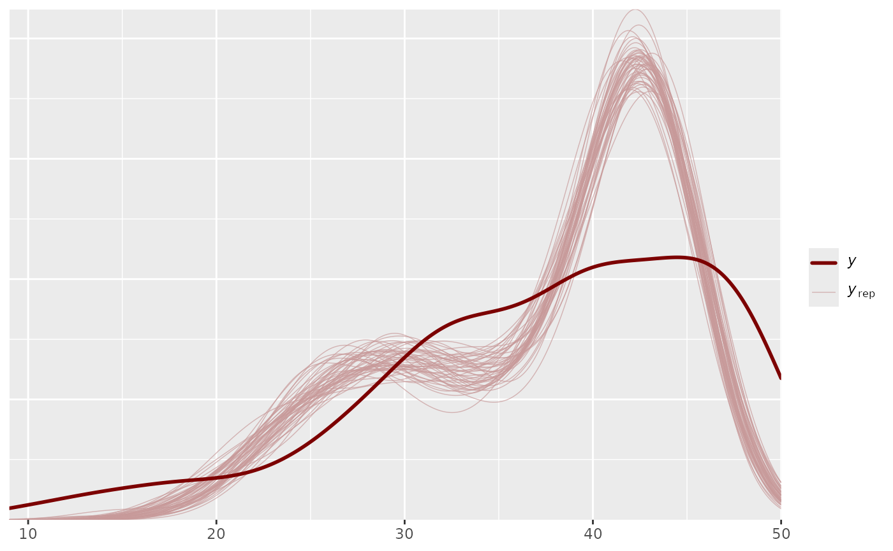
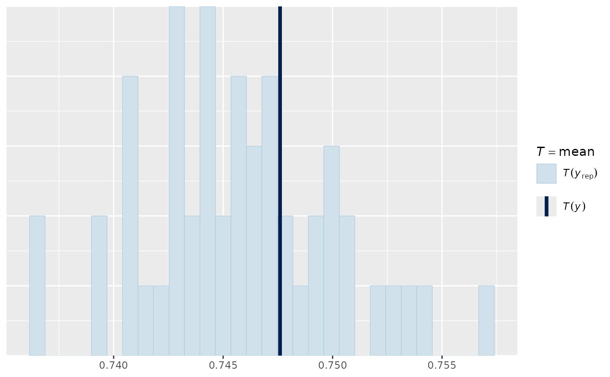

R/pp_check.R
pp_check.hmcdm.Rdpp_check method for class hmcdm.
# S3 method for class 'hmcdm'
pp_check(object, plotfun = "dens_overlay", type = "total_score", ...)a fitted model object of class "hmcdm".
A character string naming the type of plot. The list of available
plot functions include "dens_overlay", "hist", "stat_2d", "scatter_avg", "error_scatter_avg".
The default function is "dens_overlay".
A character string naming the statistic to be used for obtaining posterior predictive distribution plot.
The list of available types include "total_score", "item_mean", "item_OR", "latency_mean", and "latency_total". The default type is "total_score" which examines total scores of subjects.
Type "item_mean" is related to the first order moment and examines mean scores of all the items included in the test.
Type "item_OR" is related to the second order moment and examines odds ratios of all item pairs.
Types "latency_mean" and "total_latency" are available only for hmcdm objects that include item response time information (i.e., hmcdm object fitted with "DINA_HO_RT" model).
Additional arguments
Plots for checking the posterior predictive distributions. The default Plotfun "dens_overlay" plots density of each dataset are overlaid with the distribution of the observed values.
Zhang, S., Douglas, J. A., Wang, S. & Culpepper, S. A. (2019) <doi:10.1007/978-3-030-05584-4_24 >
# \donttest{
output_FOHM = hmcdm(Y_real_array,Q_matrix,"DINA_FOHM",Design_array,1000,500)
#> 0
library(bayesplot)
#> This is bayesplot version 1.15.0
#> - Online documentation and vignettes at mc-stan.org/bayesplot
#> - bayesplot theme set to bayesplot::theme_default()
#> * Does _not_ affect other ggplot2 plots
#> * See ?bayesplot_theme_set for details on theme setting
pp_check(output_FOHM)

pp_check(output_FOHM, plotfun="hist", type="item_mean")
#> Note: in most cases the default test statistic 'mean' is too weak to detect anything of interest.
#> `stat_bin()` using `bins = 30`. Pick better value `binwidth`.

# }